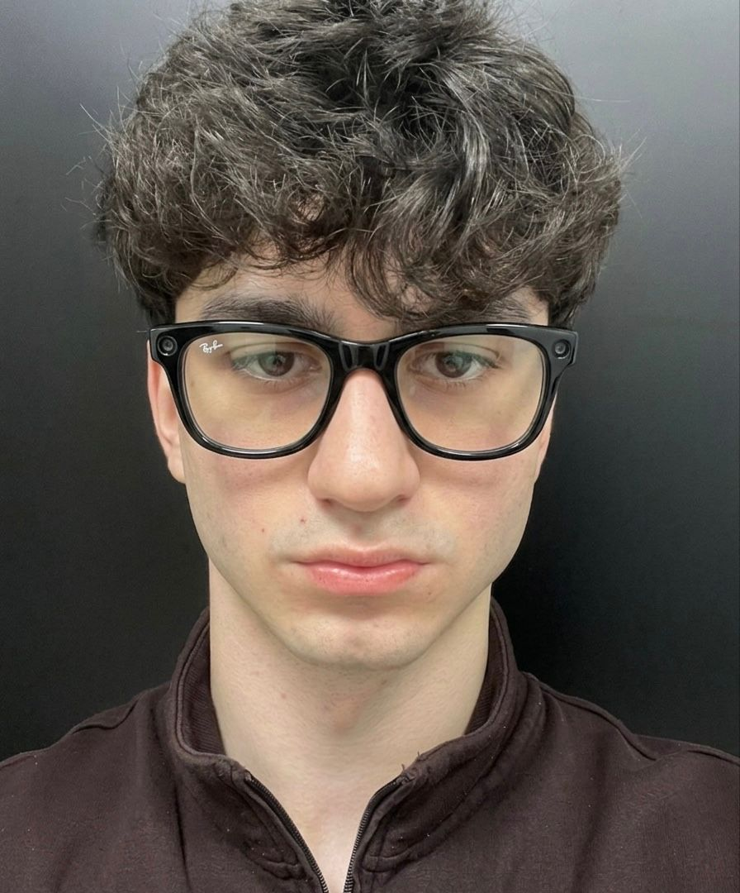

Omar AlikhanovОмар Алиханов
This is a personal portfolio presented as an encyclopedia article. Это личное портфолио в формате энциклопедической статьи.
|
 |
|
| @omars3c | |
| OccupationРод занятий | Cyber security engineerИнженер по кибербезопасности |
|---|---|
| EmployerРаботодатель | MEGASEC LLC |
| Founder ofОснователь | tmeet (12+ engineers) (12+ инженеров) |
| Known forИзвестен | Legally breaching a Fortune 500 company in 48 hours Легальным взломом компании из Fortune 500 за 48 часов |
| FieldsСфера | AI security, pentesting, red teaming, exploit development Безопасность ИИ, пентест, red team, разработка эксплойтов |
| CertificationsСертификаты | eCPPTv3; OSCP+ (in progress)(в процессе) |
| Online presenceПрофили | |
| in/omars3c | |
| Medium | @omars3c |
| contact@omars3c.com | |
Omar Alikhanov, known online as @omars3c, is a cyber security engineer and entrepreneur. He works as a Cyber Security Engineer at MEGASEC LLC and founded tmeet, a full-cycle AI platform for the HR industry built by a team of more than twelve engineers from fintech and banking.[1]
Омар Алиханов (в сети известен как @omars3c) работает инженером по кибербезопасности и занимается предпринимательством. Он инженер по кибербезопасности в MEGASEC LLC и основатель tmeet, AI-платформы полного цикла для HR-индустрии, которую создаёт команда из более чем двенадцати инженеров из финтеха и банковской сферы.[1]
At 18 he legally breached the network of a Fortune 500 company in under 48 hours and reached data affecting around 30 million users.[2] His research has been acknowledged by OpenAI, CERT-EU, Grammarly and Canva.[3]
В 18 лет он легально проник в сеть компании из списка Fortune 500 меньше чем за 48 часов и получил доступ к данным примерно 30 миллионов пользователей.[2] Его исследования отмечены OpenAI, CERT-EU, Grammarly и Canva.[3]
Early life and backgroundДетство и начало пути [edit]
Alikhanov began programming as a child and wrote his first application at the age of nine. By eleven he was taking apart variants of the njRAT remote access trojan to understand how intrusions work. That early interest pushed him toward offensive security.
Алиханов начал программировать в детстве и написал своё первое приложение в девять лет. К одиннадцати годам он разбирал варианты трояна удалённого доступа njRAT, чтобы понять, как устроены атаки. Этот ранний интерес привёл его в наступательную безопасность.
CareerКарьера [edit]
MEGASEC and tmeetMEGASEC и tmeet [edit]
Alikhanov works as a Cyber Security Engineer at MEGASEC LLC. He also founded tmeet, a full-cycle AI platform for the HR industry that includes a custom sandbox for developer interviews. The company employs more than twelve engineers with backgrounds in fintech and banking.[1]
Алиханов работает инженером по кибербезопасности в MEGASEC LLC. Он также основал tmeet, AI-платформу полного цикла для HR-индустрии с собственной песочницей для технических собеседований. В компании работают более двенадцати инженеров с опытом в финтехе и банках.[1]
Government and academic workГосударственные и академические проекты [edit]
A government agency selected Alikhanov to integrate a proprietary cybersecurity product into a joint project. He has also been invited to teach a cybersecurity course to first-year university students. At 18 he was referred by an Oracle security engineer with five years of experience for a low-level programming student internship interview.
Государственное агентство выбрало Алиханова для интеграции собственного продукта по кибербезопасности в совместный проект. Его также приглашали преподавать курс по кибербезопасности студентам первого курса. В 18 лет инженер по безопасности из Oracle с пятью годами опыта дал ему рекомендацию на собеседование на студенческую стажировку по низкоуровневому программированию.
Incident responseРеагирование на инцидент [edit]
Alikhanov investigated a major cyber incident at a university, where a sophisticated threat group had breached the network. He identified the vulnerability the attackers had used.
Алиханов расследовал крупный киберинцидент в университете, где сеть взломала продвинутая хакерская группировка. Он определил уязвимость, которую использовали атакующие.
The Fortune 500 breachВзлом компании Fortune 500 [edit]
At 18, Alikhanov ran an authorised security assessment against a Fortune 500 company and got into its network in under 48 hours. The work covered data belonging to about 30 million users. He later published a detailed write-up of how he did it.[2]
В 18 лет Алиханов провёл авторизованную проверку безопасности компании из Fortune 500 и попал в её сеть меньше чем за 48 часов. Работа затронула данные около 30 миллионов пользователей. Позже он опубликовал подробный разбор того, как это сделал.[2]
→ Read the full write-up on Medium → Читать полный разбор на Medium
RecognitionПризнание [edit]
Several organisations have acknowledged Alikhanov for responsible disclosure and security research:
Несколько организаций отметили Алиханова за ответственное раскрытие уязвимостей и исследования безопасности:
| OrganisationОрганизация | RecognitionПризнание |
|---|---|
 OpenAI OpenAI
|
Hall of FameЗал славы |
 CERT-EU CERT-EU |
Hall of FameЗал славы |
| Responsible disclosureОтветственное раскрытие | |
 Canva Canva |
Security acknowledgementБлагодарность за безопасность |
Competitive resultsСоревновательные результаты [edit]
| EventСобытие | ResultРезультат |
|---|---|
| Secure Tomorrow (AKM & IDDA) | 1st place1-е место |
| Central Asian University CTF, Uzbekistan | 9th of 100 teams9-е из 100 команд |
| CIDC 2025 (DTX & XRITDX) | Rank #21Место #21 |
| OpenAI Red Teaming | #89 of 606 teams#89 из 606 команд |
Personal lifeЛичная жизнь [edit]
Away from work, Alikhanov plays competitive chess and reached a peak rating of 2300 Elo in Blitz on Chess.com. He is a former semi-professional Valorant player and a former semi-professional boxer.
Вне работы Алиханов играет в шахматы и достиг пикового рейтинга 2300 Elo в блице на Chess.com. Он бывший полупрофессиональный игрок в Valorant и бывший полупрофессиональный боксёр.
CertificationsСертификаты [edit]
- eCPPTv3, the eLearnSecurity Certified Professional Penetration Tester. Verify eCPPTv3, сертификат eLearnSecurity Certified Professional Penetration Tester. Проверить [4]
- OSCP+. He is studying the PEN-200 course toward the Offensive Security Certified Professional certification. (in progress) OSCP+. Сейчас проходит курс PEN-200 для получения сертификата Offensive Security Certified Professional. (в процессе)
ReferencesПримечания [edit]
- "Omar Alikhanov, Founder of tmeet". LinkedIn.
- "How I Hacked a Fortune 500 Company in 48 Hours and Got Data on 30,000,000 Users". Medium.
- Security hall of fame and acknowledgements. OpenAI, CERT-EU, Grammarly, Canva.Зал славы и благодарности по безопасности. OpenAI, CERT-EU, Grammarly, Canva.
- "eCPPTv3 certificate verification". INE.